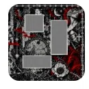

9:41
•••
5G
生日九宫格
把生日拼成
一页小小的纪念。
先选月份和主题，照片稍后再上传。
选择月份
日历会出现在成片里
01
JAN
02
FEB
03
MAR
04
APR
05
MAY
06
JUN
07
JUL
09
SEP
10
OCT
11
NOV
12
DEC
选择主题
更多主题
→
白金日历
黑金千金

黑红派对
Wild
打开手绘标注
上传后可以写日期、画心情、加一句话
换模板
上传 9 张照片